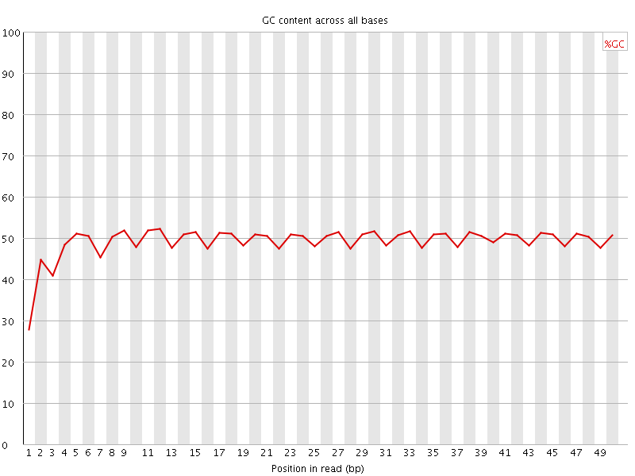

![[OK]](Icons/tick.png) Basic Statistics
Basic Statistics
| Measure | Value |
|---|---|
| Filename | MIII_27_GGCTAC.R1.fastq.gz |
| File type | Conventional base calls |
| Encoding | Sanger / Illumina 1.9 |
| Total Sequences | 23347348 |
| Filtered Sequences | 0 |
| Sequence length | 50 |
| %GC | 49 |
Per base sequence quality
Per sequence quality scores

![[FAIL]](Icons/error.png) Per base sequence content
Per base sequence content
Per base GC content

Per sequence GC content
Per base N content

Sequence Length Distribution
Sequence Duplication Levels
![[WARN]](Icons/warning.png) Overrepresented sequences
Overrepresented sequences
| Sequence | Count | Percentage | Possible Source |
|---|---|---|---|
| ATTGCGACCTCGATGTTGGATTAAGATATAATTTTGGGTGTAGCCGTTCA | 73447 | 0.31458390905896466 | No Hit |
| AAAGATTGCGACCTCGATGTTGGATTAAGATATAATTTTGGGTGTAGCCG | 48309 | 0.20691429279248333 | No Hit |
| TTTTGGAGAGTTCATATCGATAAAAAAGATTGCGACCTCGATGTTGGATT | 44027 | 0.18857387999699152 | No Hit |
| TTTGGGTGTAGCCGTTCAAATTTTAAGTCTGTTCGACTTTTAAATTCTTA | 41622 | 0.17827292418822044 | No Hit |
| TATCACAACGACAAGTAATTTACCCAATTCAACTAAATTCATCAATTGAA | 38581 | 0.1652478902528887 | No Hit |
| CGTGAAGATCAAGAACTTCGGCATCTGGCTGCGTTACGATTCCCGCTCGG | 37783 | 0.16182994316956256 | No Hit |
| CGTTTCGTTCGCTGGCCCAAATACATCCGGGTGCAGCGTCAAAAGGCTGT | 35511 | 0.15209864520801247 | No Hit |
| TCGGACAAGGCTCAGGATGCCGTTGTGAAGGTCTTCATTGGACCCAAGTA | 29699 | 0.12720502559862473 | No Hit |
| TTGGACTCGCTCGTACTACAACTGGTGCCCGTGTGTTTGGCGCTATGAAG | 26984 | 0.11557629586024074 | No Hit |
| AATGCTGAAGATCTTTTCGAGAATATGAAATAATAAATTCGTCTACAATT | 25805 | 0.11052647178600328 | No Hit |
| TTTGGAGAGTTCATATCGATAAAAAAGATTGCGACCTCGATGTTGGATTA | 24538 | 0.10509973124142409 | No Hit |
Kmer Content

| Sequence | Count | Obs/Exp Overall | Obs/Exp Max | Max Obs/Exp Position |
|---|---|---|---|---|
| AAAAA | 7204200 | 4.2874804 | 7.604898 | 45 |
| TGGAC | 2662570 | 2.5657256 | 9.746723 | 1 |
| AAGAA | 3635255 | 2.3842082 | 5.259945 | 1 |
| GCTGG | 2226305 | 2.3642135 | 5.0761538 | 11 |
| ATTTT | 1958720 | 2.3091583 | 6.7162976 | 31 |
| AAGGA | 2936240 | 2.1222358 | 5.6506 | 1 |
| TTGGA | 2028945 | 2.063977 | 5.20252 | 16 |
| TCGAT | 1891750 | 1.9624397 | 6.1902776 | 10 |
| TTTGG | 1594165 | 1.9239072 | 7.58851 | 1 |
| CGATG | 1982780 | 1.9106613 | 5.762005 | 11 |
| TTTTG | 1460150 | 1.8970191 | 6.95722 | 32 |
| GGACA | 2278435 | 1.8506725 | 6.380502 | 2 |
| AGGAC | 2254090 | 1.830898 | 6.2098203 | 1 |
| TGGAT | 1793445 | 1.8244109 | 5.30804 | 17 |
| AATTT | 1787415 | 1.7761947 | 5.2578716 | 30 |
| GATGT | 1584910 | 1.6122754 | 5.108254 | 12 |
| TGTTG | 1333910 | 1.6098201 | 5.8359456 | 14 |
| GGACG | 1728710 | 1.547419 | 5.6438084 | 2 |
| ATTGC | 1464695 | 1.5194268 | 6.0311832 | 1 |
| GTTGG | 1275395 | 1.4297895 | 5.211208 | 15 |
| TAATT | 1385645 | 1.3769466 | 5.147251 | 29 |
| TCGCT | 1170245 | 1.3642696 | 5.1411324 | 9 |
| ATGTT | 1224875 | 1.3413736 | 5.0069923 | 13 |
| CTCGA | 1272535 | 1.2504804 | 5.1119194 | 9 |
| CCTCG | 1086970 | 1.2003711 | 5.1651883 | 8 |
| AAAGA | 1770400 | 1.1611295 | 5.138771 | 1 |
| TGCGA | 1193350 | 1.1499448 | 5.196163 | 3 |
| TTGCG | 990590 | 1.1324508 | 5.5174546 | 2 |
| GATAT | 1044855 | 0.96449 | 5.0834785 | 25 |